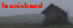
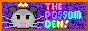
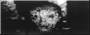
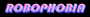

Creative & Artistic Sites
Enter the void and navigate like an old adventure game similar to Myst. The spirits are happy to see you as you journey through this immersive musical experience where the winds are always changing.

Ellie's Homepage - Ex-artist, musician (LickNand), circuit bender, and creator of Cybergrunge.net. Features DIY synth tutorials, Gameboy games, art, writings, and noise music. GNU/Linux enthusiast making weird, beautiful things.
🌌 Elucidated VoyydElrond - Portland, Oregon electronic duo spanning genres from hard-hitting beats with relentless melodic sequences to ambient slow burn drones. Lush analog tones and digital arpeggios refusing to be defined by scenes or labels.
✨ Elrond is LoveSpace Pirates Guild - Electronic music project with releases on Spotify, Apple Music, Bandcamp, and more. Check out their album "AD ASTRA" and join the cosmic journey through sound.
🏴☠️ Space Pirates GuildObensource - Experience the awesome power of the Web Audio API! Creative experiments and resources for web sound development and audio programming.
💾 ObensourceJack's Jovial Noise - Personal site exploring music, art, DIY projects, food, and ramblings. A work in progress by someone learning HTML and building their corner of the small web. Check out videos on YouTube!
🎺 Jack's Jovial NoiseThin Walls - Minimalist music site featuring new releases and archived works. A clean, focused space for audio exploration.
🧱 Thin WallsEpikuro - Interactive terminal-style site featuring music albums, games (Snake, Minecraft), space/ISS tracking, and creative digital experiments. Unique retro-tech aesthetic meets modern web creativity.
📚 EpikuroDea Decay - Mid tempo industrial music creating evocative soundscapes heavily influenced by science fiction soundtracks. Genre fluid artistic expression operating on Dea-Fi Productions label with releases on Bandcamp and Soundcloud.
🎵 Dea DecaySamplr's Page - Retro fanatic creating module music and oldschool art. Features oscilloscope views of music done on retro-hardware, circuit bending, and vintage tech collecting. YouTube content showcasing old-hardware music visualization.
🎹 Samplr ResourcesProgramming
Open source static site builder for Neocities with markdown support, photo processing, and automated deployment. Built for the community to create beautiful personal websites with ease!
💻 Xalpheric Neocities BuilderA secure, moderated guestbook API with email notifications and admin controls. Features rate limiting, input validation, CORS support, and one-click approval/rejection via email. Perfect for adding interactive guestbooks to static sites!
📝 Xalpheric Guestbook APIMusic & Audio
Tracker Music, Indie Artists, fake ads, and LIVE BROADCASTS! Need I say more?

Grass grows, birds fly, sun shines, and brother? I hurt people.

Dreampunk storm of night terror shoegaze! Post-core Death Pop coven bridging soundscapes, modern dancing, and visual arts from the Pacific Northwest.

Home of tunes and melodies featuring chiptune releases, video game music, covers, and original compositions. A nostalgic journey through digital soundscapes!
